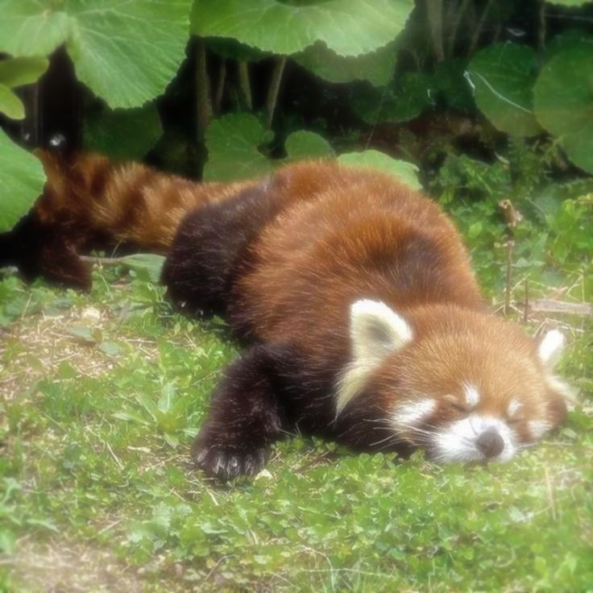
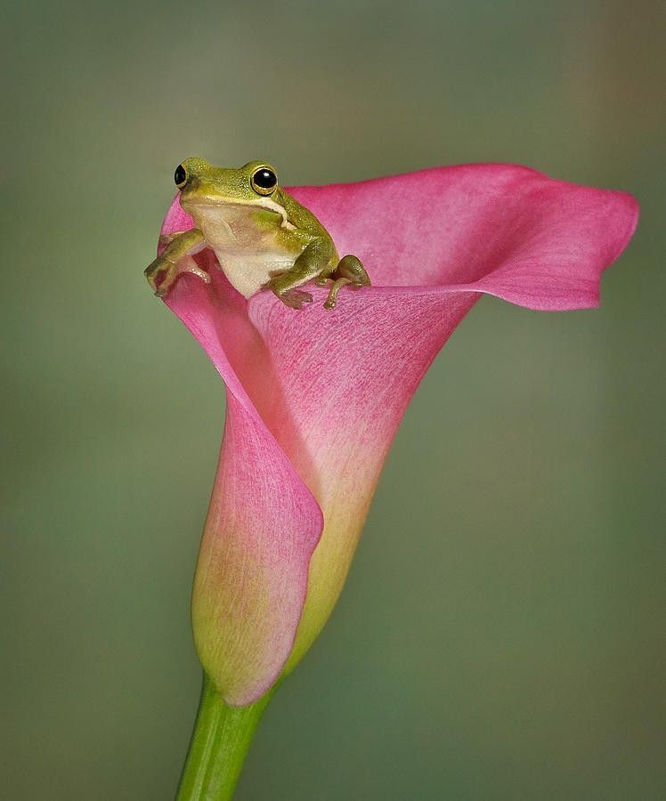
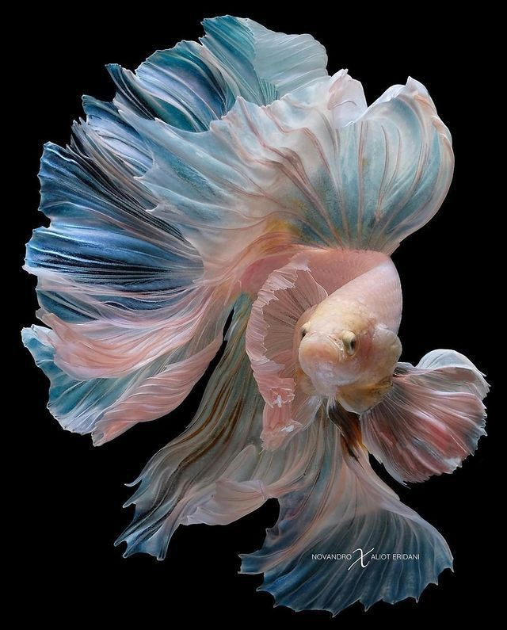

Every year we get a new phone, a new car, new electronics. We are constantly advancing, one of our most major advancements has been our technology. Throughout history, we as a society have continued to search for ways we can make our life easier and with that technology has come along. Many of you may be reading this on your phone or a computer, there might be some who may not think of this as an accomplishment, but it hasn’t been very long since these were made. The first telephone was created in 1876 and the first computer in 1938, now of course back then they didn’t have the same advancements we do. A simple call of so major at this time, but now in the 20th century we have everything at our fingertips. Have a random question or if you're curious about a subject, go onto a search engine. Many use Google, well Google wasn’t created until 1998. For some of y’all reading you may have been born before this year, for others you may know people born before this. After all, it has only been 28 years.As we continue to evolve with our technological developments, we need to start seeing if they are truly advancements. Advancement differs from person to person. In my opinion, advancing means to improve a situation without having to harm other important factors. In Rethinking Innovation for a Sustainable and Inclusive Future it says, “However, innovation is not inherently beneficial. The digital divide, job losses due to automation, and environmental degradation illustrate how technological progress can create unintended harm.”(Nanditha,et al.) Yes, technology has helped us advance as a society, but we need to see the downsides that come along with that.
I know that for me, I didn’t think much about the harm that could come along with technology and all of its developments. That was until the start of the new year, when I started to see many speak out about the harms. In particular what got me into it was a person speaking out about the harm AI was doing. I knew that AI was being used for finishing assignments and other related areas, but I never really saw the harm in it. After all, my first exposure to AI was a video of Will Smith eating spaghetti. Back then AI was not as advanced as it is now. The video was terrible, it glitched and many people created videos like this to make a joke. I also remember many saying not to use AI because they gave false information. The video went on to tell how AI was harming the planet by using too much water resources. Many of you all may have heard of this, since it has now become a major issue. AI has spread, It might even be used in your workforce. I know if you go to search something on Google, it will give you an AI response unless you have turned it off in your settings. In my opinion I believe it should be the other way around, to discourage the use of AI. Of course AI is not the only technology that is harmful, another major factor is over consumption, like buying new products. We consume like there is no tomorrow, companies will bring out a new product and every year they sell millions. Not only that but the sourcing of many materials used in electronics and cars are harmful. In Boise state university Hidden Failures in Consumer Electronics Sustainability it states “The hidden failures in consumer electronics sustainability, supply chain, and circular economy reveal a broken system. Greenwashing, unethical labor, poor waste management, and planned obsolescence weaken sustainability efforts.” (Bosie state university.) Electronic cars seem eco-friendly, but there are a lot of hidden factors not told to the public to make a profit. But it’s not just our environment being harmed. It’s also ourselves. The World Health Organization, and their article climate change states. “It affects the physical environment as well as all aspects of both natural and human systems – including social and economic conditions and the functioning of health systems.”(World Health Organization.) Unsustainable technological developments and over consumption of technological products factor that plays into climate change. Even if we just help with some of the factors, we can make a big impact in helping the environment.

I do wanna start off by saying that I am a little biased since I am very much against generative AI. Besides the negative environmental effects it has, I have also become critically worried with the images it could create. I think it’s a very dangerous tool that needs to have regulations and laws put against it. It takes away from the effort that artists put into their creations. Whether it be photography, painting, sculpture. Anything in the creative field is in danger. Not only that, but it can create fake photos of a person doing something they never did or in inappropriate scenarios. This could destroy a person‘s reputation and make them feel uncomfortable, and for some of the images it has created. I wish no one was put in that situation. While AI does make our lives easier, at the current moment I just don’t think it’s an effective tool. In my opinion it’s doing more harm than good and I feel that people are not taking it as seriously because it hasn’t happened to them as far as they know. Honestly there could be images of you in not a so positive scenarios that can make you feel uncomfortable and we don’t know because they’re not being shared publicly. A lot of my knowledge I have is what I have seen on the Internet and what I have researched. There are many techniques and strategies to be sustainable with technology. In "Responsible Innovation: Definition, Challenges and Prospects" it has some examples, “The circular economy is therefore a key model to apply if you want to remain competitive in the marketplace while adopting an ethical approach.”(Assuncao). As well as “By integrating LCA into your approach, you can innovate ethically by incorporating eco-design principles into the manufacture of technologies and products, making them more responsive to the challenges of sustainable development.”(Assuncao). We just have to take a different approach to include the new technology that we have so it benefits everyone.

If we don’t develop technology more eco-friendly/sufficient, it will keep on harming the world we live in. Whether it is the new tools or parts needed for our latest technology, we need better alternatives. Many of us look for eco-friendly items to help out the eco-stuggles our world is facing, sadly what many companies do is greenwash. This is when someone, or a company will advertise an item as being environmentally friendly or sustainable, even when it is not. In Greenwashing – the deceptive tactics behind environmental claims it states “To limit climate change and preserve a livable planet, emissions need to be cut nearly in half by 2030 and reduced to net zero by 2050.”(United Nations). This is such a terrifying concept to think about. In this article they state, “a livable plant”, Let’s just think about it. What do we need to survive? a livable planet without this planet we are all done for. So even though it might take more work, we do need to watch out and do research on what products we purchase, and be very thorough. In Greenwashing – the deceptive tactics behind environmental claims it states “Applying intentionally misleading labels such as "green " or "eco-friendly,” which do not have standard definitions and can be easily misinterpreted.”(United Nations). As well as “Communicating the sustainability attributes of a product in isolation of brand activities (and vice versa) – e.g. a garment made from recycled materials that is produced in a high-emitting factory that pollutes the air and nearby waterways.”(United Nations). This makes it for the consumer so much harder to help out but very important reasons why we need to be very thorough in the search we do because companies will look for ways around it to get a profit. Another factor is overconsumption. Overconsumption really is our biggest enemy because every year companies come out with similar products, and every year millions buy these products. The way some companies release almost exact products has even become a joke online, an example would be on how many believe that allegedly the Iphone has the same qualities just under a different name or they just changed the design a bit, even at times adding new colors to make it seem new. We honestly are our biggest enemy, some of us have the mentality of oh it doesn’t affect me, so it's okay. This is the kind of mentality that leads to others not so fortunate to be taken advantage of. For now what we see the most of is the harm done to the planet or the animals, but we all forgot that we live on the planet and we depend on many of these animals. Even if it doesn’t affect one yet eventually it will affect all of us. I know that it is hard to help out, and in some moments we don't see the damage we are doing we need to try. It doesn’t even have to be to buy eco-friendly items, it can just be consuming less or recycling. Anything that helps, will make a difference.

When starting to look for some sources for my project, I had trouble nearing down to what specific areas I wanted. So for my first three annotated biographies, I mostly focused on different approaches one could take for their company and how others are affected by insufficient, technological innovations. I was also a bit worried that my sources wouldn’t align properly, gladly I did find some that I think went well with my project. The first source I used was by Laura Diaz Anadon, Making Technological Innovation Work for Sustainable Development. In their paper, they went onto different ways on how one could better leverage technological innovation with sustainable developments. It went into how innovation is such a complex factor that is spread across the world, and that many institutions failed to support sustainable developments. Causing harm to marginalized groups and also the reasons why this happens. This work provides a comprehensive framework for understanding technology innovation as a complex issue. Although innovation is a complex issue, it can be harnessed to achieve sustainable development goals that don’t exclude margin groups, or limit the benefits one can get and why doing this it also shows the struggle that the system can have sustainability.
Now, for my second source, it was by Marcia Assuncao, Responsible Innovation: Definition, Challenges and Prospects. They went more into detail about ecological and social challenges that affect the planet in future generations, and how it’s the corporate that has the responsibility to promote sustainable diversity and well-being. Some of the key factors that went to it were culture, collaboration, and process tracking. It also showed some programs that could help like the circular economy. Concept expands on how sustainable innovation can be integrated, grading, corporate, social responsibility, and circular economic principles. That if we innovate right we can help have positive effects on social impacts. In my third article for my first annotations I did for this project would be by Matthew Nanditha, Rethinking Innovation for a Sustainable and Inclusive Future. It explains how there is incredible responsibility that one has with innovation and power. It can have to drive progress and sustainability, but also how to risk inequality, and environmental harm. It is neither good or bad but there is definitely ways that we could improve to make it better for everyone else not only that but it’s also up to the government and policies we have put in place and how we need to call for action to have certain things be reformed so innovation can benefit everyone not just a certain group.
These first sources all share similar topics, but each one goes into a little bit of a different way to improve. Now for my fourth annotated bibliography, An Extensive Review of the Benefits and Drawbacks of AI Tools, done by Thippanna,G, et al. This article is about AI, and how it is a tool that has spread across multiple fields and embedded itself into our daily lives. It went into the many factors that AI needs to be able to function and the positive effects to it. Just like there is positive there’s also negative effects. Some examples used were, losing critical skills, privacy concerns, and job displacement . In my opinion, this shows a pretty accurate form of how AI is at the current moment. It has honestly spread so far into the world. Apps that in my opinion don’t need to have AI have it. Like TikTok, there is an option for you to use AI to search for certain stuff. I don't understand the need for it, but it’s there. This goes to show how it’s not just hurting the planet, but it’s also raising issues for ourselves. Like security and ethical issues, many worry about how much control we are giving AI. How it could possibly be hacked and be used to do malicious things. Like setting off weapons or releasing restricted information.
These first sources all share similar topics, but each one goes into a little bit of a different way to improve. Now for my fourth annotated bibliography, An Extensive Review of the Benefits and Drawbacks of AI Tools, done by Thippanna,G, et al. This article is about AI, and how it is a tool that has spread across multiple fields and embedded itself into our daily lives. It went into the many factors that AI needs to be able to function and the positive effects to it. Just like there is positive there’s also negative effects. Some examples used were, losing critical skills, privacy concerns, and job displacement . In my opinion, this shows a pretty accurate form of how AI is at the current moment. It has honestly spread so far into the world. Apps that in my opinion don’t need to have AI have it. Like TikTok, there is an option for you to use AI to search for certain stuff. I don't understand the need for it, but it’s there. This goes to show how it’s not just hurting the planet, but it’s also raising issues for ourselves. Like security and ethical issues, many worry about how much control we are giving AI. How it could possibly be hacked and be used to do malicious things. Like setting off weapons or releasing restricted information.
So we have gone over the importance of have a sustainable technology, not only affects a planet in the animal that also affects us and well some certain people and more privileged areas may not see it in other parts of the world major harm is being done to two others I do believe that whenever you are more privileged one needs to look out for our fellow peers or other groups to make sure they’re not exploited child labor to get these resources is done and so horrifying I mean just imagine one of a younger person you really care for being put there in horrible work conditions just cause they’re trying to meet and trying to meet me. It’s just bad overall. and even if it’s not affecting you now, it will eventually reach you and hence why we as a community asked the people to look for better ways to sustain this technology. We need to look for better ways to be sustainable with our technology so that we can stop the harm. It is doing.